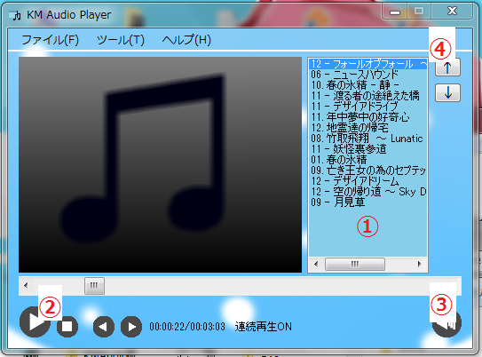
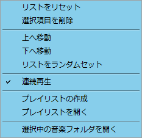
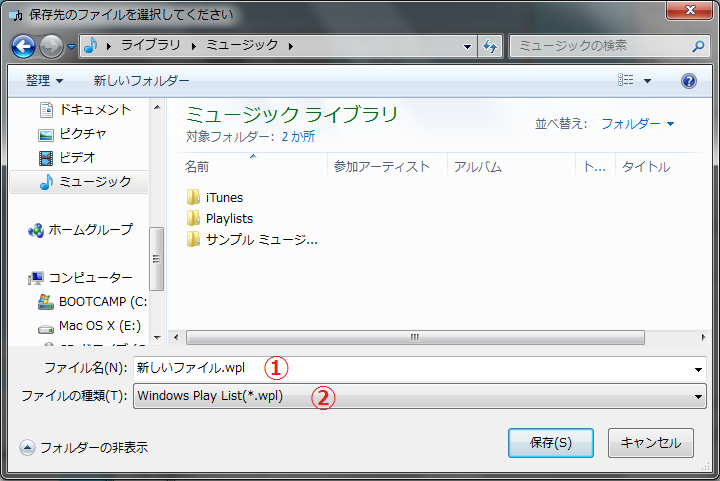
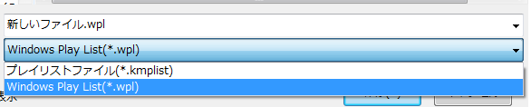
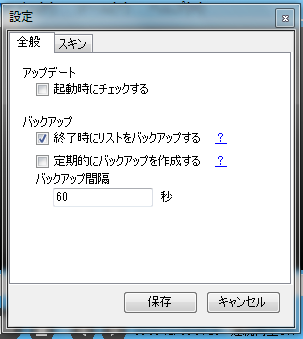
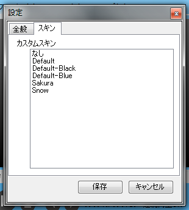

この度はKM Audio Playerをご利用いただき、誠にありがとうございます。本書はKM Audio Playerの主な使い方などの情報を掲載していきます。新機能などが追加された場合こちらにて新たに追加していくのでよろしくお願いします。
○注意事項
- 本アプリケーションは「各種dll」、「KMAudioPlayer.exe」、「Skins」で構成されています。これらのファイルは本アプリケーションの動作に深く関わるため、安易な書き換え・削除などは行わないでください。
- 本アプリケーションの改造は特に禁止したりしていませんが、基本的にノンサポートです。
- 本アプリケーションにて発生いたしました不利益に関しましては対応できませんのでご了承ください。
○必須環境
・
.Net Framework 4: 本アプリケーションを動作させる上で無くてはならないAPI郡です。当環境より下位のバージョンだとエラーがでる可能性がありますが、稀でしょう。
・
Windows Media Player: 通常は入っているので気にする必要はありません。
・
それなりのメモリ: どのアプリケーションでもそうですが、メモリが足りないとエラーがでて動作しません。
○ファイルの解説
・
KMAudioPlayer.exe: 本アプリケーションの本体です。起動はこのファイルを使用します。
・
AlphaBlendTextBox.dll:
こちらよりお借りしました透過テキストボックスのdllです。歌詞表示に使用しています。
・
AxInterop.WMPLib.dll: WMPのコントロールに使用しています。
・
Interop.WMPLib.dll: WMPのコントロールに使用しています。
・
ICSharpCode.SharpZipLib.dll: アップデータに使用しています。圧縮ファイルが扱えるライブラリです。
・
update.exe: アップデータファイルです。これを用いてアップデートを行っています。
・
readme.txt: その名のとおりです。
・
settings.ini: アプリケーション終了時・設定変更時に自動生成されます。このファイルにアプリケーションの設定が入っているため、リネームなどを行うとリセットが行えます。
・
Browser.ini: バージョン情報より表示されるブラウザの設定ファイルです。
○項目リスト
○主な使用方法
○再生まで

オーディオファイルを
①にドラッグまたはファイル関連付けにて追加が可能です。
その状態で
②の再生ボタンをクリックするか、
①の音楽をダブルクリックすると再生されます。
音楽の停止は
②の停止ボタン、一時停止は
②の再生後に現れるボタン、次の音楽・前の音楽も同様に
②の右2つで行えます。
ボリュームは
③のボタンをクリックし、現れるスライダーを調整することでできます。ここは現れるスライダー付近にマウスを乗せることでマウスホイールでも調整が可能です。

リストメニューではリストの設定、プレイリストの読み書きや現在再生中のファイルを表示することができます。
リストをリセットするには
リストをリセット。
選択している音楽をリストから削除したい場合は
選択項目を削除。
選択している音楽を移動させたい場合は
上・下へ移動。
この機能は上の項の
④でも同じ効果が得られます。
リストをランダムにばらばらにしたい場合は
リストをランダムセット。
エンドレスでリストを回したい場合は
連続再生。
リストを保存したい場合は
プレイリストの作成。
読み込みたい場合も同様です。
ただし、本アプリケーションは2つのファイルを扱っているため
別項で説明します。
現在選択している音楽ファイルの場所を知りたい場合は
選択中の音楽フォルダを開く。
○プレイリスト

基本的な操作はWindowsに付随するため詳しい説明は省きます。
まず、保存したい場所へ移動します。
ファイル名①を指定し、
ファイルの種類②を設定し、保存します。
ファイルの種類については以下を参照ください。

ファイルの種類の違いは書き込む形式の違いです。
kmplistはファイルパスとファイル名を保存させる形式で、wplはWindows Media Playerと同じ保存形式となります。
Windows Media Playerでも使うのであればwplを選択していただくと共有が可能です。
○設定

アップデート項目の
起動時にチェックするは、チェックを入れておくと起動時に自動で確認を行います。
もしアップデートがあれば通知が行われます。
バックアップ項目の
終了時にリストをバックアップするは、アプリケーション終了時にリストに残っていた音楽情報と再生中の位置を記憶し、次回起動時に引き継ぐことができます。
定期的にバックアップを作成するでは定期的に上と同じことを行います。
バックアップ間隔は
定期的にバックアップを作成するを有効にしている場合にのみ機能し、設定した間隔でバックアップを作成します。

スキンでは、アプリケーションの見た目を変更します。
適用したいスキンを選択すると適用されます。
ただし、スキンファイルが
読み取り専用属性が付与されている場合はエラーが発生する可能性があります。